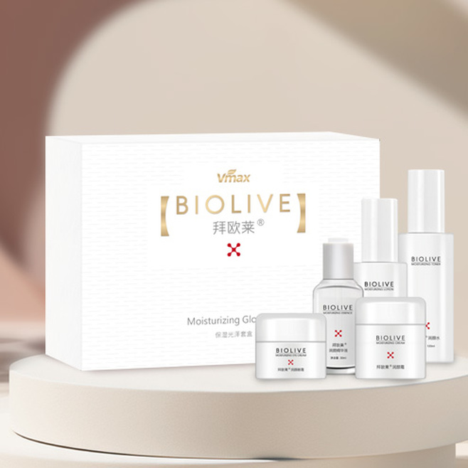

For healthcare professionals
Explore career opportunities with guidance through the application, preparation and placement journey. Your goals and questions belong in the conversation.
See the candidate journey →We connect healthcare professionals with meaningful opportunities and help care organizations find the people their teams need to thrive.

Recruiting is personal. We take time to understand the people behind every resume and the teams behind every opening.
Explore career opportunities with guidance through the application, preparation and placement journey. Your goals and questions belong in the conversation.
See the candidate journey →Find a recruiting partner who listens to your workforce needs and helps you connect with qualified professionals for your care team.
Explore talent solutions →Every career and credential is different. Here’s a high-level look at the typical stages for an internationally educated healthcare professional pursuing a U.S. opportunity.
Share your experience, education and career interests. We review your profile and discuss the opportunity and eligibility requirements.
Meet with our recruiting team. Talk through your goals, clinical background, questions and what a placement may involve.
If there’s a mutual fit, review the written offer and terms carefully. Gather and verify the records required for your specific pathway.
Understand the credential review and state board process. For nursing roles, NCLEX may be required; requirements vary by state.
Where applicable, learn what immigration steps may apply and who is responsible for each. Timelines and outcomes depend on individual circumstances.
Plan practical details for a move and get oriented to your new workplace, community, and the expectations of your role.
Settle into your position with clear points of contact and ongoing communication as you grow in your new environment.
Ask questions at each stage. We believe informed decisions and honest communication make for stronger partnerships.
Big career moves come with big questions. Our approach centers on clear information, thoughtful conversations and practical guidance throughout the process.
We explain the next steps and help you understand what is needed.
Get ready for interviews and important career conversations.
Plan ahead for records that may take time to request or verify.
Know who to contact when a question comes up along the way.
Our commitment to candidates and care partners
Meet our team ↗We work with healthcare employers to understand role requirements, team culture and workforce priorities, then connect those needs with qualified talent.
Here are a few useful starting points. Our team can help clarify what may apply to your situation.
We welcome inquiries from healthcare professionals with relevant education and experience. Eligibility depends on the role, employer needs, credential requirements and any applicable work authorization requirements.
A current resume or CV is a helpful starting point. You may also want to gather education details, work history, licenses and contact information for references. We’ll explain what is needed for a specific role.
For U.S. registered nurse licensure, candidates generally need to meet the requirements of the state board of nursing, which may include the NCLEX-RN. Requirements and steps vary by state, so verify with the relevant board.
No. Hiring decisions, licensure and immigration outcomes are determined by employers and government or regulatory authorities. We aim to communicate clearly about the steps and requirements, but outcomes and timelines vary.
An initial conversation is an opportunity to explore fit. Any formal commitments would be set out in written documents for your review before you decide whether to proceed.
Tell us what you’re looking for. We’ll help you find the right next step.